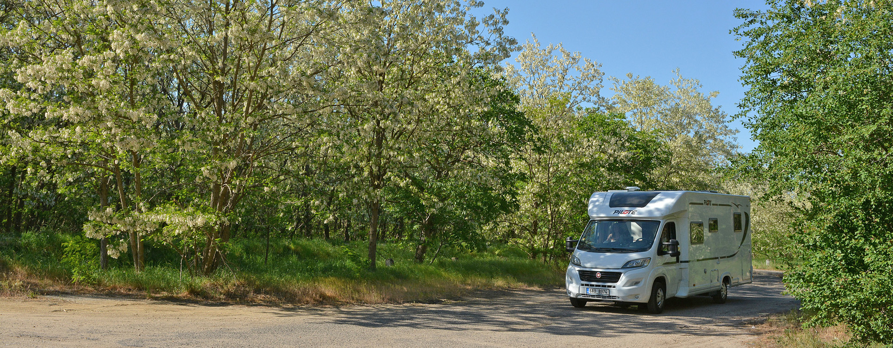
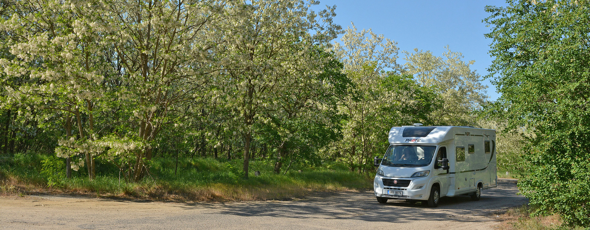
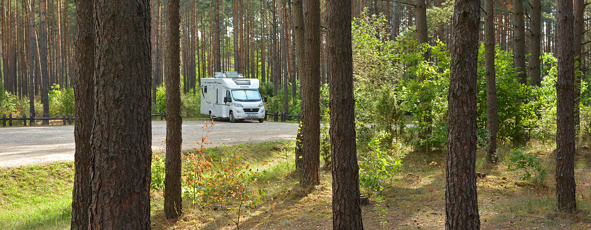
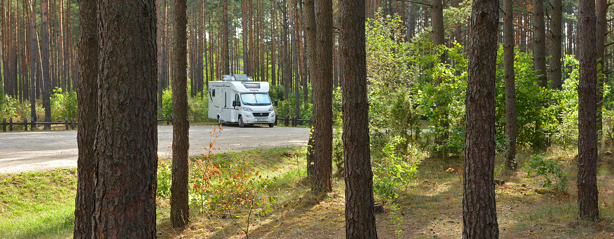
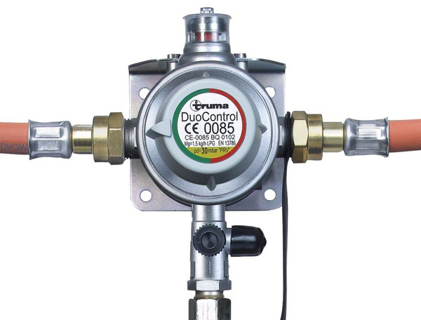
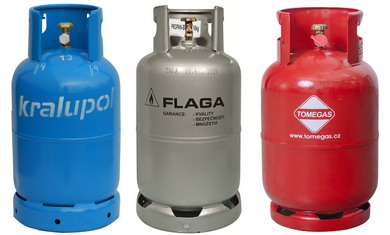
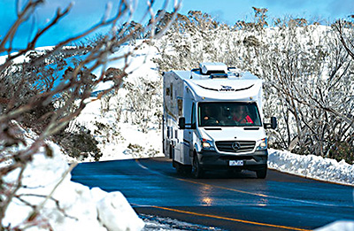
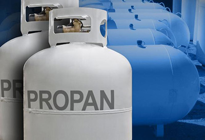
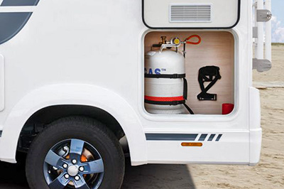

 



31.01.2019 - Měnit bomby nebo napevno?
V říjnu loňského roku jsem tu zveřejnil článek, vlastně to byla něco jako první, úvodní část úvahy na téma plyn v autě (I tehdy řekl Bůh: "Budiž plyn"!). Pro mne jako nováčka to byla zcela neprobádaná oblast. Teď máme za sebou první sezónu cestování a na tu příští mohu tedy na základě zkušeností přistoupit k nové úvaze - jestli se pro naše podmínky vyplatí s "plynem" na palubě něco dělat dál.
{kind=link}
V minulém článku jsem psal hlavně o samotném médiu - totiž o plynu. Propan-butan a čistý propan, rozdíly, výhody, nevýhody a došel jsem k názoru, že budu zatím používat čistý propan. Důvody jsou v článku popsány také a ani zdaleka to ale neznamená, že je to rada univerzální. Prostě se (zatím) hodí pro náš styl jezdění s Dodíkem. No a teď je čas si trochu rozebrat "hardware", neboli plynový systém v našem obytném autě.
Co jsme to vlastně koupili v Dodíkovi přímo z výroby.
V otázce plynového systému jsou si všechna obytná auta na trhu nabízená vlastně dost podobná. Mají:
1) Vnější schránku na dvě plynové bomby, většinou o velikosti 11kg na každou. Pozn.: u vestaveb (tzv. "vanů") je prostor pro bombu/y uvnitř kabiny, vetšinou pod jedním z lůžek.
2) Ve schránce jsou přípojné hadice a případně nějaký ten regulátor (povíme si dále)
3) ze schránky jde plyn hadicovým rozvodem a rozdělovači do spotřebičů, což je v drtivé většině aut "svatá trojice": kombo zařízení na topení a ohřev vody, dále plynový vařič a chladnička. Toť vše.
1) PROSTOR (SCHRÁNKA) NA UMÍSTĚNÍ PLYNOVÝCH LAHVÍ
Ani jsem netušil, jak velké rozdíly mohou být ve tvaru, umístění a hlavně velikosti schránky na plynové bomby. Každý výrobce obytňáků a dokonce i každý jednotlivý model má tento prostor řešen trochu jinak. A protože výrobce Dodíka, firma PILOTE, není co se velikosti schránky týče zrovna velkorysá, měl jsem hned po převzetí auta docela nemilé starosti. Jsou popsány v článku (14.03.2018 - Trable s plynem) a zejména začátečníkům jeho přečtení vřele doporučuji. Každopádně se vyplatí při výběru nového auta zkontrolovat a posoudit i tento docela důležitý aspekt - jak je ta schránka na bomby velká a jak je prakticky řešena. Málokdo ale má k dispozici dost prostoru. Třeba jako toto, velikostí luxusní řešení:
{kind=link}
Mimochodem zrovna tato fotka ukazuje zřejmě nějaké "samo-domo" provedení. Na jednu stranu je prostor nádherně velký, je hezky vidět i dodatečná izolace lahví proti mrazu, pomocí jedné obětované karimatky. Na druhou stranu je ale stejný materiál použit i na dně skříňky a zakrývá tak otvory, kterými může odcházet případný výron plynu. Takže je tu docela zaděláno na explozi nebo požár. Zbývá jen doufat, že po uzavření krycích dvířek jsou nějaké otvory v nich. Protože jinak by to bylo řešení extrémně nebezpečné. Případně unikající plyn by se ve skříňce hromadil a pak už stačí jen náhodná jiskra a tragédie je na světě.
Integrovaná auta mají většinou přidělený prostor dostatečně velký, u polointegrovaných modelů a alkoven už může být prostor o něco horší, resp. menší. I když to na fotce není moc viditelné, ve dně skříňky je samozřejmě několik velkých otvorů. Případný unikající plyn (je těžší nežli vzduch) tak může bezpečně uniknout z tohoto prostoru ven do ovzduší.

Fotka z našeho Dodíka ukazuje, jak nízký prostor to je. Čest a chvála zastoupení Pilote, firmě J.M.Trade, která nabízí docela profesionální úpravu. Spodní černou plechovou část nahradí jinou, která má dno asi o 5-6cm níže a pak všechny starosti popsané v článku okamžitě zmizí. Bohužel za cenu snížení světlé výšky vozu o stejný počet centimetrů a to je docela citelná ztráta. Takže jsem si výměnu zatím udělat nenechal.
Rozvod plynu nejsou jen bomby a hadice.
Na fotce se zelenými karimatkami je také krásně vidět, co všechno tam zatím chybí. A mimochodem, tady jsou už mezi jednotlivými výrobci docela značné rozdíly ve výbavě přímo z výroby. Někteří tam dají pouze to nejnutnější, lepší výrobci vybaví plynový systém rovnou v základu i dodatečnými komponenty, které jsou u těch levnějších značek za příplatek. Což je další z cest, jak ukázat nízkou "základní" cenu. Co je tedy třeba:
A) Vysokotlaká hadice
{kind=link}
Přímo na ventil plynové láhve se připojuje vysokotlaká hadice. Naše české bomby mají šroubení G8, ale dají se použít i mosazné redukce mezi jednotlivými průměry šroubení. Hadice se dělají v délce buďto 45cm nebo 75cm. Když jsou v autě nebo karavanu bomby dvě, mohou být připojeny buďto obě najednou (viz. dále) nebo je v akci jen jedna. Druhá bomba jen vedle stojí a posádka je musí, po vyprázdnění té první bomby, prostě prohodit. Takže i vysokotlakou hadici potřebuji buďto jen jednu anebo dvě, zvlášť pro každou bombu. Samozřejmě je potřeba podívat se, čím je váš mazlík vybaven při nákupu. Zvláště u individuálních dovozů z jiných zemí. Vysokotlaká připojovací hadice s pojistným ventilem stojí zhruba 1000-1200Kč za kus.
B) Regulátor tlaku
{kind=link}
Nejjednodušší pokračování je napojení hadice do regulátoru tlaku plynu. Ten je nutný, aby plyn šel do rozvodů pod stále stejným tlakem. Běžné jsou regulátory na 30 (obvyklé v ČR) nebo 50 mbarů nebo plynule nastavitelné. Regulátory se nabízejí v cenách několika stokorun.
No a to je to nejprimitivnější možné řešení plynu: Bomba - vysokotlaká hadice s pojistkou - tlakový regulátor, a pak už jen rozvod plynu po autě. Výhoda je jedna - nízká cena. Zato nevýhod je hromada. Je připojena jen jedna bomba takže je tu nutnost je při spotřebování plynu prohodit. Druhá nevýhoda je nemožnost používat spotřebiče za jízdy. Z bezpečnostních důvodů. A třetí nevýhodou je nebezpečí při možné havárii auta. Tento jednoduchý systém totiž neumí odpojit bomby a hrozí tak unik plynu, požár nebo exploze.
C) Řešení s použití produktů firmy TRUMA
Na všechna lepší řešení už musíte vydat pár tisíc navíc. A proto je levnější výrobci mnohdy nedávají do základní výbavy vozu, i když jsou nanejvýš důležité a prospěšné. Firma Truma totiž vyrábí řadu sofistikovaných regulátorů s kombinovanou funkcí ochrany. Pojďme si je představit:
Truma Duo Control - je plynový regulátor s mechanismem přepínajícím mezi dvěma bombami v případě, že v jedné z nich dojde plyn. Člověku tak odpadá nutnost nepříjemného přehazování bomb v zimě nebo třeba v noci. Takže máte dvě bomby, dvě hadice a regulátor Truma Duo Control. Ten stojí okolo 3500Kč. Stále však u něj platí nařízení o vypnutém plynu za jízdy. Spotřebiče se tedy v pohybu nesmí používat.
{kind=link}
Nejvyšší, nejbezpečnější a tím tedy i nejlepší řešení představují regulátory TRUMA MONO CONTROL CS a TRUMA DUO CONTROL CS. To "CS" v názvu znamená, že jsou doplněny o Crash Senzor. Pojistku, která v případě nárazu v rychlosti vyšší než 15km/h okamžitě odpojí přívod plynu. Regulátory Truma CS jsou tak vlastně jedinou legální možností, jak za jízdy používat plynové spotřebiče (vytápění, atd.). Navíc je to samozřejmě i daleko vyšší zabezpečení právě v případě havárie. Pro napojení na jednu bombu stojí Truma Mono Control CS okolo 3500-4000Kč (vyrábí se ve vertikálním i horizontálním provedení), Truma Duo Control CS pro dvě bomby stojí 4500-5000kč. "Céeskové" regulátory bezpečně poznáte podle zeleného tlačítka nárazové pojistky.
{kind=link}
A tak, když jsem v Dodíkovi našel při převzetí vozu jak nejvyšší regulátor Truma Duo Control CS, tak dokonce i obě vysokotlaké hadice, měl jsem vybavení v ceně minimálně 7000Kč už v základní výbavě. I na těchto "drobnostech" se může tvořit rozdíl mezi prodejní cenou u různých výrobců.
D) Plynové filtry
{kind=link}
Ti pečlivější majitelé obytných aut a karavanů přidávaní do plynového rozvodu i plynové filtry. Montují se mezi hadici a regulátor a vcelku účinně odstraňují z plynu veškeré nečistoty, zvláště pak olejové složky. A daleko víc se to týká propan-butanu než čistého propanu. Filtry pracují s čistící účinností až 99%, mají ukazatel zašpinění vložené filtrační patrony a stojí 1300-1500kč/ks. Za novou filtrační vložku dáte většinou lehce přes 500kč/ks.
2) Vyměnitelné plynové láhve neboli lidově "plynové bomby".
Pokud chci zůstat u vyměnných plynových bomb, mám vlastně 3 možnosti, které používat. Liší se materiálem, ze kterého jsou udělány, hmotností a cenou.
 A) Ocelové bomby. Představují nejobvyklejší řešení. Všude jsou, všude je můžete vcelku snadno nechat vyměnit (čerpací stanice, různé vesnické prodejny, autoservisy, dokonce některé restaurace, atd. atd.). U velkých a specializovaných prodejců plynu se můžete i rozhodnout, jestli chcete láhev s propan-butanem nebo s čistým propanem. Když si ji někde berete poprvé, zaplatíte (prý) vratnou zálohu okolo 800kč za jednu. Ocelová láhev váží zhruba 11kg, takže při dvou plných lahvích na palubě tu máme 44kg odebraných z donosnosti auta.
{kind=link}
{kind=link}
B) Kompozitní láhve. Jak už název napovídá, jsou zkonstruovány z kompozitního materiálu, který je odolný ale hlavně lehký. Takže prázdná láhev váží asi 5kg, což představuje úsporu hmotnosti přes 10kg (při dvou lahvích) a to je docela znát. Mají bohužel ale mnohá "ale". Záloha na jednu kompozotní láhev je okolo 2000Kč. Ani zdaleka je nemají všude. Díky masivnímu plastovému límci jsou o zhruba 5cm vyšší než láhve ocelové (takže pro našeho Dodíka jsou bez úpravy schránky nepoužitelné). Škoda. Pokud máte v okolí dobrého prodejce plynu nabízejícího kompozitové láhve, ideálně jak s PB, tak s čistým propanem, a dostatečně velkou schránku na bomby, bylo by toto řešení můj favorit. Vývoj jde ale rychle dopředu a tak se jistě brzy objeví i pro Dodíka dostatečně malá kompozitní láhev na 11kg plynu.
{kind=link}
C) Láhve z hliníku. V této sekci o vyměnitelných lahvích je tato varianta spíš jen pro doplnění. Mají hmotnost opět jen asi 6kg (na 11kg náplně), nekorodují, jsou poměrně odolné. Prostě samé výhody. Ale prodejci plynu je na výměnu nenabízejí. Proč? Tyto láhve si ale můžete koupit v různých karavanistických shopech. Stejně jako láhve ocelové, a to jak v "českém" provedení (s ochranným límcem), tak s "německým" (jen s ochrannou čepičkou). Předpokládá se tedy, že si je necháte někde naplnit. Otázkou ale je kde, za jakých podmínek a hlavně: jestli se to oficiálně vůbec smí. Jako vždy jde hlavně o bezpečnost.
3) MALÁ ODBOČKA K PLATNÉ LEGISLATIVĚ
a) Revize plynových lahví.
Jako každé jiné plynové zařízení, musí mít i plynová láhev platnou revizi. Ta probíhá vždy ve specializovaném servisu. Každá láhev je při této proceduře zcela vyprázdněna, vymyta, je posouzen stav pláště láhve, odstraněn starý lak a nahrazen novým vypalovaným lakem. Ventil lahve je rozebrán a repasován, popřípadě dojde k nahrazení novým. Takto "opravená" pak musí projí tlakovou zkouškou – naplnění inertním plynem několikanásobně vyšším než provozním tlakem. Prostě docela odborná práce. O tom všem je pak proveden záznam na štítek, který najdete na každé láhvi na jejím límci.
{kind=link}
Běžná PB láhev je použitelná maximálně 10 let od poslední platné revize, u organizací splňující nejpřísnější kvalitativní kriteria, tedy u většiny specializovaných prodejců plynu, je doba použitelnosti prodloužena na 15 let od poslední platné revize. Jakékoliv lahve s posledním tlakovou zkouškou delší než 15 let není možno plnit.
Bohužel, ne každý prodejce či distributor láhví je zodpovědný. V některých případech můžete v nějakém zapadákově klidně dostat při výměně lahev, která je stará, poničená a která přímo ohrožuje na životě a zdraví. Prodejce chce ušetřit nálady za provádění revizí "svých" lahví a tak distribuuje mezi své zákazníky nebezpečné lahve. Bez revize a klidně i poškozené.
A naopak - když si já koupím jakoukoliv svoji vlastní láhev, mám automaticky stejnou povinnost. Tedy hlídat si revizi a neničit láhev víc, než je zdrávo. Když pak jako zákazník požaduji naplnění takové poškozené lahve, plnírna mě NESMÍ vyhovět. Bohužel, reálná praxe je samozřejmě mnohdy jiná. Oficiálně se smí jakákoliv volně ložená láhev plnit jenom na legálních a certifikovaných plnících stanicích s váhou. Těch zase není až tak moc. Jinde vám jí mohou buďto nenaplnit do možného maxima, takže platíte sice možná nižší cenu za 1kg plynu ale nedostanete deklarovaný a zaplacený počet kilogramů. A daleko větší problém je, když se bomba naplní více, že je kritická hodnota (vetšinou 80% kapacity lahve). To pak hrozí přetlak, únik plynu ... zbytek si domyslíte.
Takže snížit váhu auta zakoupením hliníkových lahví se vyplatí jen těm, kteří mají dobrou a spolehlivou plnírnu někde v okolí. Navíc se taková láhev nesmí plnit přímo v obytňáku a tak ji musíte z auta vyndat úplně stejně, jako při běžné výměně.
Jsme národ kutilů. Každý si myslí, že je totální odborník ve všech oblastech, v otázkách plynu samozřejmě také. Na různých karavanistických diskuziních fórech čtu "rady" a "běžnou praxi", ze kterých vstávají hrůzou vlasy na hlavě. "Sehnal jsem si ventil a tak si napouštím z nádrže láhve sám". Vidím inzeráty, kde někdo prodává láhve, které vypadají jako že už absovovali jednu-dvě války, atd. atd. Tímto stylem "Pat a Mat" nikdy nepůjdu a opravdu vřele všem doporučuji to nedělat také. Devětsetdevadesátdevětkrát se to vyplatí a já ušetřím pár korun. A potisícáté přijdu o vše.
{kind=link}
4) Kolik mám v lahvích plynu?
U výměnných bomb nemáme přesnou představu, kolik plynu mi v lahvích zbývá. Vydržím ještě příští víkend? Kolik jsem vypálil minulou sobotu a neděli? Samozřejmě mohu bombu vymontovat, postavit nebo pověsit na váhu, z výsledku odečíst hmotnost obalu a mám množství plynu, které mi zbývá. Asi cítíte, že to není zrovna praktické řešení pro každodenní použití.
A) Ruční měřiče hladiny plynu
{kind=link}
Nejjednodušší způsob je pořídit si ruční ultrazvukový měřič. Prostě ho přiložíte na bombu (ocelovou nebo hliníkovou) a pokud je v té výšce plyn, rozsvítí se zelená dioda. Pokud je tam už prázdno, svítí červená. Nejprodávanější je tento Truma Level Check. Stojí 1500-2000kč, jede na dvě AAA baterie a má i zabudovanou svítilnu. Používám ho k naprosté spokojenosti. Jediná nevýhoda je, že pro změření musím jít ven a otevřít prostor pro bomby.
B) Podstavce s váhou
{kind=link}
Firma Brunner (ale i jiní výrobci) dodávají podstavec pro bombu (W8 gascontrol), který je vlastně váhou. Takže je vhodný pro všechny druhy bomb. Výsledky vážení pak posílá přes Bluetooth přímo do vašeho telefonu. Jede na 4 tužkové baterie a ty vydrží celou sezónu. Kontrola množství zbývajícího plynu je pak hračkou. Stačí být s telefonem v dosahu Bluetooth signálu, tedy v autě nebo jeho okolí. Nevýhody jsou dvě: cena za jeden podstavec je skoro 2.500kč a hlavně na výšku přidá k bombě dalších 4,5cm. A to je třeba pro mě už moc :-(
C) Ultrazvukové pevné snímače s Bluetooth.
{kind=link}
Asi nejluxusnější řešení je součástí sofistikového systému pro obytňáky "Truma iNET". Truma iNET box je krabička (stojí asi 8000Kč), která umožní ovládat většinu nových produktů Truma (topení, ohřev vody, klimatizaci, atd) na dálku, přes Bluetooth nebo dokonce přes SIM kartu na dálku telefonem. Mohu si tedy např. pustit topení přímo ze sjezdovky dřív, než k autu dorazím. No a do tohoto systému lze připojit i magnetický ultrazvukový snímač. Prostě ho jen magneticky nacvaknete na dno ocelové lahve. U hliníkových musíte ještě přikoupit ocelové perko pro uchycení. No a pak si doma vzpomenete, vezmete do ruky telefon a zjistíte stav plynu v autě, které může být na třeba na druhé straně zeměkoule. Snímač stojí jeden zhruba 3500kč a znovu - musíte mít i ten iNet Box. Takže cenově nejdražší. Ale frajeřinka to je tedy hodně velká.
5) A jdeme na pevné montáže plynových nádrží
Montáží pevné nádrže do obytného auta získáváme možnost natankovat propan-butan v podstatě kdekoliv na čerpací stanici, podle aktuální potřeby. Natankuji naftu a při té příležitosti z vedlejšího stojanu i plyn. Žádné starosti na cestách. Montáž musi provést samozřejmě odborná firma (opět apeluji na Pata a Mata aby neblbnuli a nezkoušeli domácí montáž), něco to stojí a celý systém v autě podléhá budoucím revizím. Existují dva základní typy instalací:
A) Instalace pevných hliníkových nádrží na místo běžných plynových lahví
{kind=link}
Do prostoru pro lahve se namontují dvě hliníkové nádrže (na 2x10kg plynu), dále vnější plnící hrdlo, veškeré rozvody, měřiče hladiny, apod. Vše napevno, bez možnosti bomby vyjmout. Za celou instalaci si specializované firmy řeknou do 20000Kč. Samozřejmě lze instalovat např. jen jednu pevnou nádrž a na místo druhé dávat stále jednu běžně vyměnitelnou bombu. Vidíte, že alternativ pro řešení plynu je mnoho a dá se tedy přesně zvolit podle individuálních potřeb a požadavků.
{kind=link}
B) Instalace speciální pevné nádrže do podvozku auta.
{kind=link}
Tedy ona ta nádrž se může namontovat jak do podvozku, tak i na vhodné místo přímo do nástavby. Nádrží se nabízí mnoho druhů, tvarů a velikostí. Instalací pořádné nádrže se dostaváme na velkou zásobu plynu, co sebou vezeme. Klidně i třeba 200kg. Cena za montáž se nedá jednoduše říct. Záleží na veliikosti nádrže, umístění a náročnosti montáže. Ale pár desítek tisíc to bude. No a aby to bylo ještě pestřejší, všechny tři možnosti (tedy výměnná bomba, pevná bomba a separátní nádrž) lze samozřejmě v jednom autě libovolně kombinovat.
{kind=link}
Pozn. čtenáře Tomáše Dědka: Nepříjemnou vlastností a tedy nevýhodou napevno umístěných tlakových lahví, ať stojatých nebo ležatých, patří hromadění zbytkové vody v nádobách a s tím případné možné poruchy při odběru plynu. Tato voda se tam dostává s plynem u stojanu, po odčerpání plynu tam ta voda zůstává protože my čerpáme z lahví pouze plynou část. Po sezoně to může činit i nějaký ten litr. Je dobré na to myslet.
A tím jsme asi vyčerpali všechny možnosti, které se karavanistovi nabízejí a je na čase začít trochu filozofovat o výhodách a nevýhodách všech řešení.
6) Jaké je tedy to nejlepší řešení ?
Jednoznačná odpověď na tuto základní otázku neexistuje.
1) Každý z nás jezdí jiným stylem. Někdo je divočák, někdo jezdí do kempů. Vyjíždí z domova a v neděli se vrací zpět domů. Někdo cestuje stále z místa na místo, má volné zaměstnání nebo je v důchodu (nebo je rentiér).
2) Každý z nás jezdí různě často. Někdo jen párkrát za sezónu na pár dní, někdo v obytném autě žije klidně celý rok non-stop.
3) Každý z nás jezdí v různých obdobích roku. Někdo jezdí jen v letní sezóně, trochu na jaře a trochu na podzim. Někdo jezdí celoročně, v zimě ale jen párkrát. A někdo je lyžař a zimní měsíce jsou pro něj hlavní sezóna.
4) Každý z nás jezdí rozdílně do různých oblastí. Někdo jezdí hlavně po České republice, někdo je převážně v zahraničí.
Nabízím "rozhodovací vývojový diagram" který jsem použil pro naše podmínky. Netvrdím, že musí fungovat na všechny kolegy nomády. Ale jen pro inspiraci:
 OTÁZKA č.1 - budu pravidelně jezdit tak daleko, nebo v zimě, že mi 2x11kg nebude na takovou jednu cestu stačit?
{kind=link}
22kg plynu ve dvou lahvích může v zimě, kdy je třeba 10st mráz, padnout za jeden víkend. V létě vám stejné množství stačí klidně na měsíční kontinuální cestu. Obecně je topení v autě totiž bezpečně největší žrout plynu. Pokud je odpověď na první otázku "ano", je dobré uvažovat o instalaci velké pevné nádrže. Každopádně budu muset nasadit minimálně pevné lahve, abych mohl v případě vyčerpání plynu dotankovat plyn na nějaké čerpací stanici na cestě. Velmi pravděpodobně pak budete mít propan-butan, se všemi nevýhodami, které při nízkých teplotách přináší (viz. první článek). Samozřejmě jsou i náhradní řešení: mít výměnné láhve s propanem, vozit v garáži další náhradní láhve (pozor na řádné odvětrání garáže) a vyměňovat je. Nebo mít instalované přídavné naftové topení, apod. Každopádně - velká nádrž v podvozku vozu se vyplatí jen opravdu vášnivým cestovatelům, s velkým podílem zimních cest. Pro nás tedy stačí běžné bomby.
 OTÁZKA č.2 - chci řešit, jaká je v průběhu roku venku teplota a jestli mám ten správný plyn ?
{kind=link}
Je to vlastně otázka používání čistého propanu. Propan je celoroční plyn, nikdy vám samovolně nezkapalní. Tedy pokud nebude v teplotě nižší než -43 °C. Je čistší, nebude zanášet hořáky, trysky, reduktory a další součástky. Je ale dražší, dostanete ho ve výměnných lahvích jenom někde a hlavně: v ČR je zatím pouhopouhých sedm čerpacích stanic. Takže nasazení jakékoliv pevné nádrže nebo bomb nemá moc logiku. Pokud ale máte štěstí a bydlíte blízko některé z těchto stanic, je to úplně jiná otázka a vybavit vůz pevnými lahvemi (tedy lehkým hliníkem) a čerpat do nich čistý propan, mi připadá jako skoro ideální řešení. A v nouzi nejvyšší lze natankovat samozřejmě i propan-butan.
Zatím (co tedy já vím), jsou stanice, které vám natankují čistý propan ve Zlíně, Hradci Králové, Opavě, Brně-Zábrdovicích, v Mimoni u České lípy, a ve vesničce Liptál u Vsetína. Toť vše. Někde se musíte dokonce i předem objednat. Kdo se tedy rozhodl pro propan, velmi pravděpodobně se rozhodl pro běžně vyměnitelné bomby. Což je náš případ. Prodejce bomb s propanem máme za rohem a po většinu roku mi na výlet 2x11kg bohatě stačí.
OTÁZKA č.3 - kolik mám místa ve schránce na bomby?
{kind=link}
Tato otázka míří na případné použití kompozitních lahví. Ano, při jejich prvotním "nákupu" zaplatíte vyšší zálohu ale ušetříte více než 10kg hmotnosti. Pak už jejich výměna je stejně drahá jako běžná láhev -platíte jen za plyn. Potřebujete ale větší schránku, kompozit je o 5cm vyšší. A pokud byste se chtěli někdy vybavit i vážící podložkou od Brunnerů, potřebujete najednou navíc 10cm výšky ve schránce. No a to my nemáme. Takže nám zbývá řešení pomocí běžných ocelových lahví.
Mám tedy čistý propan - neřeším roční období. Když pojedu někam v zimě na dlouhou dobu, vezmu si do garáže jednu nebo dvě lahve navíc. Ale to se hned tak nestane. A měřit hladinu budu dál ručním měřákem Truma, v budoucnu uvažuji o iNET boxu a pak bych mohl přejít na magnetická ultrazvuková čidla.
Obecně lze říct, že primární je rozhodnutí, jestli budu používat čistý propan. Ten kromě nesporných výhod přináší ale i všechna ta omezení, která vás nasměřují k běžným výměnným lahvím. Tedy pokud jako my bydlíte daleko od nejbližší plnírny čistého propanu.
A s tím tento článek končím. Po prostudování všech možných informací, po poznání všech možností, jsem pro náš styl jezdění dospěl zase zpět na začátek. Základní ocelové láhve, plněné čistým propanem. No, toto tvrzení a rozhodnutí ale platí pro rok 2019, dál ho třeba změníme. A znovu - co karavanista, to jiná odpověď. Tak ať vám to jezdí ! (a topí, a vaří, a chladí).